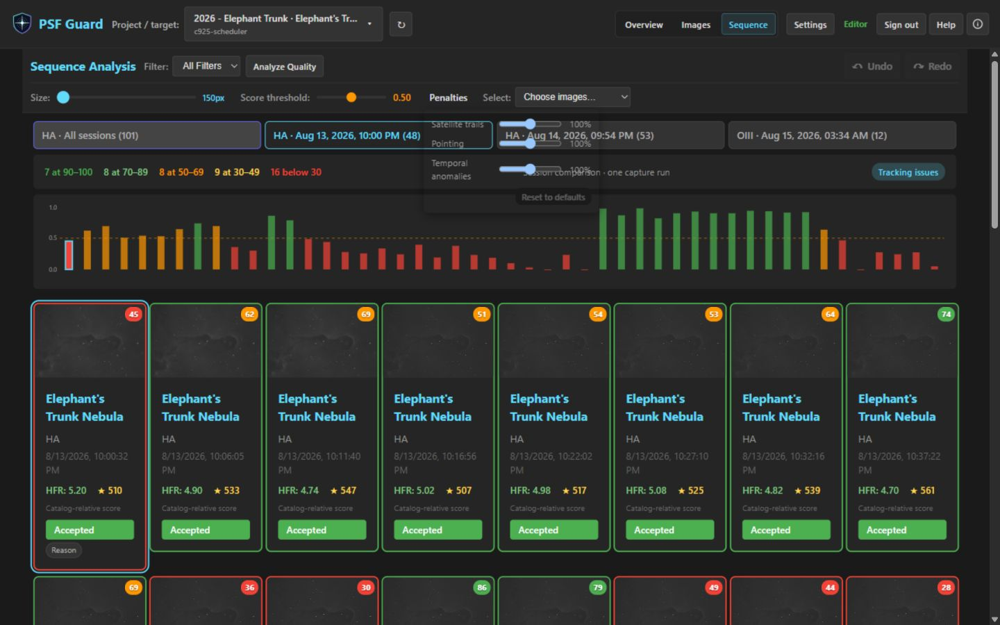

Quality Screening
PSF Guard screens light frames for problems that affect integrations but are not caught by conventional grading. These problems include occlusion from trees or dome edges, small clouds, thin veils, stray light, static glow, off-target pointing, tracking loss, and plate-solve failures. The system can render spatial detections as annotated diagnostics, and astrometry results provide solved centers and field-relative evidence.
All detections use classical statistics. Thresholds are calibrated against real session data, which includes measured clean-frame envelopes across multiple nights and filters. Each detector is verified by regression tests to ensure consistent behavior.
Global metrics do not capture localized frame degradation
Star count and half-flux radius (HFR), which conventional grading tools rely on, often show little change when a frame is partially degraded. For example, in a session where a tree line progressively occluded the field of view:
- Frames with an occluded corner maintained star counts within normal variation because the unoccluded part of the field remained clear.
- The HFR remained constant at approximately 2.6 until the frame was more than 60% occluded because the remaining stars were still in focus.
- A thin cloud veil reduced the brightness of every star by 37% while the star count, HFR, and background level remained normal, causing the capture software's grader to accept the frame.
- The rolling star-count baseline in N.I.N.A. adapts to gradual changes, which caused it to accept 31 of 33 occluded frames in the test session, including one that was 90% blocked.
The screening stack uses local, photometric, and temporal signals to identify these issues. It evaluates individual grid cells, measures flux ratios instead of star counts, and compares each cell to its historical baseline to prevent gradual occlusions from being ignored.
The detection stack monitors multiple image characteristics
| Signal | Catches | How |
|---|---|---|
| Dead cells | Occlusion (trees, dome, dew shield) | This measures the fraction of the 8×6 grid cells whose star density has collapsed compared to the median cell of the frame. |
| Transparency | Thin uniform veils | This calculates the median flux ratio of stars matched against a per-sequence reference catalog. A ratio of 0.7 indicates the whole frame is approximately 0.4 magnitudes dimmer. |
| Localized extinction | Small clouds | This divides per-cell flux ratios by global transparency. A passing cloud shows as a coherent dip in a specific patch of stars. |
| Star-share drops | Small opaque clouds | This compares each cell's share of the stars in the frame against the temporal median of that cell using a Poisson-aware calculation. |
| Background rise | Errant light (headlights, flashlights) | This compares the per-cell background level to the history of that cell after subtracting the gradient using a robust plane fit. |
| Background fall | Dark occluders, cloud shadow | This measures background drops where an occluder blocks skyglow, causing the area to appear darker. |
| Static glow | Corner haze, lit occluder edges | This flags cells that are brighter than the gradient model of the frame. This detects issues present from the first frame, which temporal baselines cannot identify. |
| Fresh plate solution | Off-target frames, pointing jumps/drift, deterministic no-solves | The solver processes the current pixels and compares the solved center with the target coordinates, stable framing clusters, and drift within the segment. |
These signals feed a sequence analyzer that scores each frame from 0 to 1 relative to its session. Sessions are defined by the same target, filter, and exposure, and they are split when a gap of 60 minutes or more occurs. The analyzer classifies potential issues with verdicts of OK, WARN (for recoverable issues like gradients that flat-frame processing can resolve or glow that causes stacking artifacts), and REJECT (for severe issues like clouds and occlusion).
Scores are calculated using only the available evidence. If an optional scan has not run, the analyzer renormalizes the score using the completed checks instead of penalizing the frame. This ensures that frames without spatial scans are not graded down, and a frame will receive the same score regardless of the session context or project view.
The analyzer applies score guardrails and penalty controls
A low relative score does not automatically assign a fault or recommend a rejection. PSF Guard only assigns a specific cause when the corresponding detector collects sufficient evidence, and rejection recommendations are based on these causes rather than the score alone.
The system applies an absolute guardrail: any light frame with zero detected stars receives a failing score and is assigned a No Stars Detected cause, even if no other sequence frames are available. Frames that have not been measured are not penalized, as missing optional analysis is not treated as evidence of a poor image.
You can adjust how strongly satellite trails, pointing failures, and temporal anomalies affect the score by opening the Penalties section in the Sequence view. The penalty sliders range from 0% (which ignores the evidence) to a default of 100%, up to a maximum of 200% (which doubles the score penalty). The chosen settings apply to the Sequence view, grid badges, and detail panel. The zero-star guardrail is fixed and cannot be scaled. Setting the satellite or pointing penalty to 0% also prevents that evidence from triggering a rejection recommendation.

Get started with quality screening
Results are displayed on the affected frames and are cached across application restarts.
You can use the selectors to focus on Clouded, Off Target, Unsolved, or all Recommended frames. PSF Guard displays a review screen before applying any rejections. For more information, see Astrometry Quality.
Include the --regrade-db option to enable target-aware checks and grade proposals.
# Screen a night of lights (no database needed)
psf-guard screen-fits "/path/to/2026-06-30/LIGHT"
# Render an annotated diagnostic PNG for every WARN/REJECT frame
psf-guard screen-fits "/path/to/LIGHT" --annotate /tmp/diagnostics
# Add target-aware astrometry and propose/write supported [Auto] rejections
# (dry-run first; frames matched by filename AND capture timestamp)
psf-guard screen-fits "/path/to/LIGHT" --regrade-db my-db-slug --dry-run
psf-guard screen-fits "/path/to/LIGHT" --regrade-db my-db-slug
# Then archive the rejected files out of your stacking tree
psf-guard move-rejects --db my-db-slugIf orbital elements are cached, the quality scan projects satellite crossings and checks a narrow pixel corridor along each predicted path. Predicted crossings that are not detected in the pixels generate a warning, while only pixel-confirmed high-risk trails trigger a rejection recommendation. See Satellite Tracks.
Read the annotated diagnostic images
The --annotate option renders each flagged frame with an overlaid analysis grid. Cells are color-coded based on the triggered detection signal, and the caption contains the verdict, score, per-frame metrics, and classifier details.
| Marking | Meaning |
|---|---|
| Red fill | This indicates a dead cell where the star density collapsed due to occlusion. |
| Orange fill | This indicates localized extinction where stars are dimmed by a small cloud, labeled with the cell's flux ratio. |
| Magenta fill | This indicates a transient drop in the cell's share of stars. |
| Yellow border | This indicates a transient background rise caused by stray light. |
| Blue border | This indicates a transient background fall caused by a dark occluder or cloud shadow. |
| Cyan fill | This indicates static glow that rises above the gradient model of the frame. |
The detector identifies arriving occlusion

The detector flags heavy occlusion with a lit edge

The boundary of the advancing occluder is highlighted

Photometry detects thin cloud veils


No individual cell is flagged because there is no localized degradation. The issue is detected solely through the matched-star flux ratios. This frame was accepted by conventional grading tools.
The static glow detector flags corner haze

You can tune the screening detectors
The default parameters were calibrated against clean-frame envelopes across multiple nights and filters. The primary configuration settings are listed below:
| Knob | Default | Notes |
|---|---|---|
--min-score | 0.35 | This sets the composite score threshold below which a frame is rejected. |
--dead-cell-rise | 0.08 | This sets the occlusion sensitivity. Clean-frame jitter is usually 0.04 or lower, making 0.08 a conservative threshold. |
--session-gap | 60 min | This defines the gap in minutes used to split sequences into separate sessions. |
| glow threshold | 2.5% of sky and >30 ADU | The ADU floor prevents narrowband nebulosity from triggering false detections. True haze typically measures 48 to 103 ADU. This setting is rig-specific. |
| transparency threshold | 0.80 | This sets the global transparency threshold for uniform veil rejections. |
Safety properties prevent incorrect rejections
- Regrade matching uses a double-key system. Both the filename and the capture timestamp within a ten-minute window must match. This prevents screening the wrong directory from updating incorrect database rows. The system never modifies rows that are already marked as Rejected.
- The analyzer uses fresh pixel data as the source of truth. Embedded FITS WCS headers and coordinate associations are not used as grading evidence. The Scan Quality tool solves the actual pixels in the image and fingerprints cache entries against the FITS file and solver resources to ensure freshness.
- The system abstains on isolated solver failures. An isolated plate-solve failure reduces the frame score but does not trigger an automatic rejection unless other image degradation is detected. System or operational solver errors do not penalize the frame.
- Baselines are bounded over time. A prolonged period of anomalous frames is eventually accepted as a new baseline, which ensures that permanent environmental changes like moonrise do not cause the rest of the session to be rejected. Occluded frames remain penalized by the absolute spatial metric.
- Star-grid metrics abstain on sparse fields. The system disables spatial grid checks on frames with very low star counts, such as short narrowband exposures on slow optical systems, to prevent false dead-cell detections.
- Single-frame anomalies do not trigger rejections. Occlusion detections require confirmation from adjacent frames in the sequence. Photometric cloud detections use multi-star flux comparisons and can trigger on a single frame because clouds move quickly.
The quality screening system has some limitations
- The server scan uses the N.I.N.A. Fast algorithm to measure star counts and HFR. The full-resolution aperture calculation also provides the star flux for photometry. The
screen-fitsutility supports flux photometry with all available detectors. - The photometric reference requires stars to be visible in at least 50% of the session's frames. Consequently, it does not detect regions that are occluded for most of the sequence. This is by design, as those cases are handled by the dead-cell metric.
- Raw one-shot-color FITS or XISF files require a recognized
BAYERPATheader. PSF Guard debayers these files to luminance to perform quality measurements, and the diagnostic images remain luminance views. - The ADU threshold for static glow detection is specific to the imaging equipment and the exposure profile.
The complete technical documentation is available in the repository at docs/SCREENING.md.